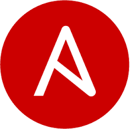

My Skills

AWS

Python

Jenkins
Docker
Kubernetes
Maven

GIT

HTML
Terraform

Linux
Jira

MySQL

Devops Engineer with 6+ years of dedicated expertise in optimizing software development and IT services. Proficient in automating, streamlining, and enhancing the entire development lifecycle, from code to development. Demonstrated experience creating CI/CD pipelines, managing insfrastructure as code, and ensuring system stability and scalability. Adept in estabilishing a continous improvement culture, working with cross function teams, and shortening time-to-market. Committed to maintaining at the cutting edge of industry best practices and technology in order to provide efficient and reliable solutions.
Proficient in Git repository management on GitHub, adeptly overseeing release cycles and implementing advanced branching strategies. Demonstrated expertise in version control, creating branches and tags for precise tracking and seamless collaboration. Established efficient code repositories using Git, enhancing code management and team collaboration. Proficient in CI/CD automation using Jenkins, configuring jobs for comprehensive testing, artifact management, and streamlined deployment. Skilled in Maven for source code management, compiling and packaging in various distributable forms. Ensured flawless deployment of JAR, WAR, and EAR files on Tomcat servers, meticulously reviewing logs for successful deployments. Expertise in multi-environment deployment, maintaining optimal application performance. Proficient in AWS services, utilizing CI/CD, Git, and Docker for scalable solutions. Implemented robust backup techniques for Jenkins tasks and leveraged Ansible playbooks for server provisioning automation. Proficient in AWS, including EC2 instances and critical service deployment. Ensured data integrity through regular S3 data backups and EBS volume connections. Designed and implemented secure cloud-based
Experienced in Amazon EC2 server management for Linux/Windows/Ubuntu, assuring continuous functioning through SNS and CloudWatch monitoring. Expertise in optimizing AMIs, snapshots, and volumes for operational efficiency, as well as resource adjustments. Amazon RDS-managed databases for efficient data management and security. Ansible was used for configuration management and automated deployments, which increased productivity. Kubernetes clusters have been established for scalable containerized environments. Customized AWS services(ELB, Route53, S3, and so on) for worldwide business requirements. L1 and L2 level issues were resolved, customers were actively engaged, deployments were carried out, and tickets were maintained to ensure SLA compliance. CloudWatch for automated actions and alerts was used to monitor and optimize system resources. Containers and Pods are effectively handled for efficient deployment and scalability. Administered Jenkins for automated builds and incorporated Code Quality Analysis tools such as SonarQube for continuous integration.
vipin.vijayan2903@gmail.com
7845477050
Chennai, India